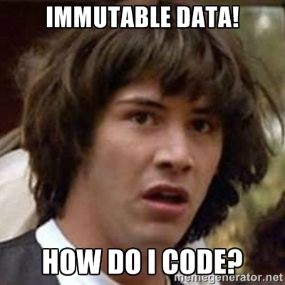

val name : string
Full name: index.name
Full name: index.name
val age : int
Full name: index.age
Full name: index.age
val kidsAges : int list
Full name: index.kidsAges
Full name: index.kidsAges
val kidsAgesInJuly : int list
Full name: index.kidsAgesInJuly
Full name: index.kidsAgesInJuly
val years : seq<int>
Full name: index.years
Full name: index.years
Multiple items
val seq : sequence:seq<'T> -> seq<'T>
Full name: Microsoft.FSharp.Core.Operators.seq
--------------------
type seq<'T> = System.Collections.Generic.IEnumerable<'T>
Full name: Microsoft.FSharp.Collections.seq<_>
val seq : sequence:seq<'T> -> seq<'T>
Full name: Microsoft.FSharp.Core.Operators.seq
--------------------
type seq<'T> = System.Collections.Generic.IEnumerable<'T>
Full name: Microsoft.FSharp.Collections.seq<_>
val fullname : first:string -> last:string -> string
Full name: index.fullname
Full name: index.fullname
val first : string
val last : string
val sprintf : format:Printf.StringFormat<'T> -> 'T
Full name: Microsoft.FSharp.Core.ExtraTopLevelOperators.sprintf
Full name: Microsoft.FSharp.Core.ExtraTopLevelOperators.sprintf
val evens : values:seq<int> -> seq<int>
Full name: index.evens
Full name: index.evens
val values : seq<int>
val isEven : (int -> bool)
val x : int
module Seq
from Microsoft.FSharp.Collections
from Microsoft.FSharp.Collections
val filter : predicate:('T -> bool) -> source:seq<'T> -> seq<'T>
Full name: Microsoft.FSharp.Collections.Seq.filter
Full name: Microsoft.FSharp.Collections.Seq.filter
val sumOfEvens : values:seq<int> -> int
Full name: index.sumOfEvens
Full name: index.sumOfEvens
val sum : source:seq<'T> -> 'T (requires member ( + ) and member get_Zero)
Full name: Microsoft.FSharp.Collections.Seq.sum
Full name: Microsoft.FSharp.Collections.Seq.sum
val sumOfEvensWithoutPiping : values:seq<int> -> int
Full name: index.sumOfEvensWithoutPiping
Full name: index.sumOfEvensWithoutPiping
val coord : int * int
Full name: index.coord
Full name: index.coord
val threeTuple : string * int * bool
Full name: index.threeTuple
Full name: index.threeTuple
type Person =
{Name: string;
Age: int;}
Full name: index.Person
{Name: string;
Age: int;}
Full name: index.Person
Person.Name: string
Multiple items
val string : value:'T -> string
Full name: Microsoft.FSharp.Core.Operators.string
--------------------
type string = System.String
Full name: Microsoft.FSharp.Core.string
val string : value:'T -> string
Full name: Microsoft.FSharp.Core.Operators.string
--------------------
type string = System.String
Full name: Microsoft.FSharp.Core.string
Person.Age: int
Multiple items
val int : value:'T -> int (requires member op_Explicit)
Full name: Microsoft.FSharp.Core.Operators.int
--------------------
type int = int32
Full name: Microsoft.FSharp.Core.int
--------------------
type int<'Measure> = int
Full name: Microsoft.FSharp.Core.int<_>
val int : value:'T -> int (requires member op_Explicit)
Full name: Microsoft.FSharp.Core.Operators.int
--------------------
type int = int32
Full name: Microsoft.FSharp.Core.int
--------------------
type int<'Measure> = int
Full name: Microsoft.FSharp.Core.int<_>
val emma : Person
Full name: index.emma
Full name: index.emma
type FamilyMember =
| Child of Person
| Parent of Person
Full name: index.FamilyMember
| Child of Person
| Parent of Person
Full name: index.FamilyMember
union case FamilyMember.Child: Person -> FamilyMember
union case FamilyMember.Parent: Person -> FamilyMember
Multiple items
module List
from Microsoft.FSharp.Collections
--------------------
type List<'T> =
| ( [] )
| ( :: ) of Head: 'T * Tail: 'T list
interface IEnumerable
interface IEnumerable<'T>
member Head : 'T
member IsEmpty : bool
member Item : index:int -> 'T with get
member Length : int
member Tail : 'T list
static member Cons : head:'T * tail:'T list -> 'T list
static member Empty : 'T list
Full name: Microsoft.FSharp.Collections.List<_>
module List
from Microsoft.FSharp.Collections
--------------------
type List<'T> =
| ( [] )
| ( :: ) of Head: 'T * Tail: 'T list
interface IEnumerable
interface IEnumerable<'T>
member Head : 'T
member IsEmpty : bool
member Item : index:int -> 'T with get
member Length : int
member Tail : 'T list
static member Cons : head:'T * tail:'T list -> 'T list
static member Empty : 'T list
Full name: Microsoft.FSharp.Collections.List<_>
val sum : list:'T list -> 'T (requires member ( + ) and member get_Zero)
Full name: Microsoft.FSharp.Collections.List.sum
Full name: Microsoft.FSharp.Collections.List.sum
val printfn : format:Printf.TextWriterFormat<'T> -> 'T
Full name: Microsoft.FSharp.Core.ExtraTopLevelOperators.printfn
Full name: Microsoft.FSharp.Core.ExtraTopLevelOperators.printfn
val square : x:int -> int
Full name: index.square
Full name: index.square
val sq : int
Full name: index.sq
Full name: index.sq
type Employee =
| Worker of Person
| Manager of Employee list
Full name: index.Employee
| Worker of Person
| Manager of Employee list
Full name: index.Employee
union case Employee.Worker: Person -> Employee
union case Employee.Manager: Employee list -> Employee
type 'T list = List<'T>
Full name: Microsoft.FSharp.Collections.list<_>
Full name: Microsoft.FSharp.Collections.list<_>
val jdoe : Person
Full name: index.jdoe
Full name: index.jdoe
val worker : Employee
Full name: index.worker
Full name: index.worker
val doSomething : x:int -> unit
Full name: index.doSomething
Full name: index.doSomething
val task : Async<unit>
Full name: index.task
Full name: index.task
val async : AsyncBuilder
Full name: Microsoft.FSharp.Core.ExtraTopLevelOperators.async
Full name: Microsoft.FSharp.Core.ExtraTopLevelOperators.async
val tasks : Async<unit []>
Full name: index.tasks
Full name: index.tasks
val i : int
Multiple items
type Async
static member AsBeginEnd : computation:('Arg -> Async<'T>) -> ('Arg * AsyncCallback * obj -> IAsyncResult) * (IAsyncResult -> 'T) * (IAsyncResult -> unit)
static member AwaitEvent : event:IEvent<'Del,'T> * ?cancelAction:(unit -> unit) -> Async<'T> (requires delegate and 'Del :> Delegate)
static member AwaitIAsyncResult : iar:IAsyncResult * ?millisecondsTimeout:int -> Async<bool>
static member AwaitTask : task:Task<'T> -> Async<'T>
static member AwaitWaitHandle : waitHandle:WaitHandle * ?millisecondsTimeout:int -> Async<bool>
static member CancelDefaultToken : unit -> unit
static member Catch : computation:Async<'T> -> Async<Choice<'T,exn>>
static member FromBeginEnd : beginAction:(AsyncCallback * obj -> IAsyncResult) * endAction:(IAsyncResult -> 'T) * ?cancelAction:(unit -> unit) -> Async<'T>
static member FromBeginEnd : arg:'Arg1 * beginAction:('Arg1 * AsyncCallback * obj -> IAsyncResult) * endAction:(IAsyncResult -> 'T) * ?cancelAction:(unit -> unit) -> Async<'T>
static member FromBeginEnd : arg1:'Arg1 * arg2:'Arg2 * beginAction:('Arg1 * 'Arg2 * AsyncCallback * obj -> IAsyncResult) * endAction:(IAsyncResult -> 'T) * ?cancelAction:(unit -> unit) -> Async<'T>
static member FromBeginEnd : arg1:'Arg1 * arg2:'Arg2 * arg3:'Arg3 * beginAction:('Arg1 * 'Arg2 * 'Arg3 * AsyncCallback * obj -> IAsyncResult) * endAction:(IAsyncResult -> 'T) * ?cancelAction:(unit -> unit) -> Async<'T>
static member FromContinuations : callback:(('T -> unit) * (exn -> unit) * (OperationCanceledException -> unit) -> unit) -> Async<'T>
static member Ignore : computation:Async<'T> -> Async<unit>
static member OnCancel : interruption:(unit -> unit) -> Async<IDisposable>
static member Parallel : computations:seq<Async<'T>> -> Async<'T []>
static member RunSynchronously : computation:Async<'T> * ?timeout:int * ?cancellationToken:CancellationToken -> 'T
static member Sleep : millisecondsDueTime:int -> Async<unit>
static member Start : computation:Async<unit> * ?cancellationToken:CancellationToken -> unit
static member StartAsTask : computation:Async<'T> * ?taskCreationOptions:TaskCreationOptions * ?cancellationToken:CancellationToken -> Task<'T>
static member StartChild : computation:Async<'T> * ?millisecondsTimeout:int -> Async<Async<'T>>
static member StartChildAsTask : computation:Async<'T> * ?taskCreationOptions:TaskCreationOptions -> Async<Task<'T>>
static member StartImmediate : computation:Async<unit> * ?cancellationToken:CancellationToken -> unit
static member StartWithContinuations : computation:Async<'T> * continuation:('T -> unit) * exceptionContinuation:(exn -> unit) * cancellationContinuation:(OperationCanceledException -> unit) * ?cancellationToken:CancellationToken -> unit
static member SwitchToContext : syncContext:SynchronizationContext -> Async<unit>
static member SwitchToNewThread : unit -> Async<unit>
static member SwitchToThreadPool : unit -> Async<unit>
static member TryCancelled : computation:Async<'T> * compensation:(OperationCanceledException -> unit) -> Async<'T>
static member CancellationToken : Async<CancellationToken>
static member DefaultCancellationToken : CancellationToken
Full name: Microsoft.FSharp.Control.Async
--------------------
type Async<'T>
Full name: Microsoft.FSharp.Control.Async<_>
type Async
static member AsBeginEnd : computation:('Arg -> Async<'T>) -> ('Arg * AsyncCallback * obj -> IAsyncResult) * (IAsyncResult -> 'T) * (IAsyncResult -> unit)
static member AwaitEvent : event:IEvent<'Del,'T> * ?cancelAction:(unit -> unit) -> Async<'T> (requires delegate and 'Del :> Delegate)
static member AwaitIAsyncResult : iar:IAsyncResult * ?millisecondsTimeout:int -> Async<bool>
static member AwaitTask : task:Task<'T> -> Async<'T>
static member AwaitWaitHandle : waitHandle:WaitHandle * ?millisecondsTimeout:int -> Async<bool>
static member CancelDefaultToken : unit -> unit
static member Catch : computation:Async<'T> -> Async<Choice<'T,exn>>
static member FromBeginEnd : beginAction:(AsyncCallback * obj -> IAsyncResult) * endAction:(IAsyncResult -> 'T) * ?cancelAction:(unit -> unit) -> Async<'T>
static member FromBeginEnd : arg:'Arg1 * beginAction:('Arg1 * AsyncCallback * obj -> IAsyncResult) * endAction:(IAsyncResult -> 'T) * ?cancelAction:(unit -> unit) -> Async<'T>
static member FromBeginEnd : arg1:'Arg1 * arg2:'Arg2 * beginAction:('Arg1 * 'Arg2 * AsyncCallback * obj -> IAsyncResult) * endAction:(IAsyncResult -> 'T) * ?cancelAction:(unit -> unit) -> Async<'T>
static member FromBeginEnd : arg1:'Arg1 * arg2:'Arg2 * arg3:'Arg3 * beginAction:('Arg1 * 'Arg2 * 'Arg3 * AsyncCallback * obj -> IAsyncResult) * endAction:(IAsyncResult -> 'T) * ?cancelAction:(unit -> unit) -> Async<'T>
static member FromContinuations : callback:(('T -> unit) * (exn -> unit) * (OperationCanceledException -> unit) -> unit) -> Async<'T>
static member Ignore : computation:Async<'T> -> Async<unit>
static member OnCancel : interruption:(unit -> unit) -> Async<IDisposable>
static member Parallel : computations:seq<Async<'T>> -> Async<'T []>
static member RunSynchronously : computation:Async<'T> * ?timeout:int * ?cancellationToken:CancellationToken -> 'T
static member Sleep : millisecondsDueTime:int -> Async<unit>
static member Start : computation:Async<unit> * ?cancellationToken:CancellationToken -> unit
static member StartAsTask : computation:Async<'T> * ?taskCreationOptions:TaskCreationOptions * ?cancellationToken:CancellationToken -> Task<'T>
static member StartChild : computation:Async<'T> * ?millisecondsTimeout:int -> Async<Async<'T>>
static member StartChildAsTask : computation:Async<'T> * ?taskCreationOptions:TaskCreationOptions -> Async<Task<'T>>
static member StartImmediate : computation:Async<unit> * ?cancellationToken:CancellationToken -> unit
static member StartWithContinuations : computation:Async<'T> * continuation:('T -> unit) * exceptionContinuation:(exn -> unit) * cancellationContinuation:(OperationCanceledException -> unit) * ?cancellationToken:CancellationToken -> unit
static member SwitchToContext : syncContext:SynchronizationContext -> Async<unit>
static member SwitchToNewThread : unit -> Async<unit>
static member SwitchToThreadPool : unit -> Async<unit>
static member TryCancelled : computation:Async<'T> * compensation:(OperationCanceledException -> unit) -> Async<'T>
static member CancellationToken : Async<CancellationToken>
static member DefaultCancellationToken : CancellationToken
Full name: Microsoft.FSharp.Control.Async
--------------------
type Async<'T>
Full name: Microsoft.FSharp.Control.Async<_>
static member Async.Parallel : computations:seq<Async<'T>> -> Async<'T []>
val printParameter : x:int -> unit
Full name: index.printParameter
Full name: index.printParameter
val printTwoParameters : x:int -> (int -> unit)
Full name: index.printTwoParameters
Full name: index.printTwoParameters
val subFunction : (int -> unit)
val y : int
val printTwoParameters : x:int -> y:int -> unit
Full name: index.printTwoParameters
Full name: index.printTwoParameters
val add : x:int -> y:int -> int
Full name: index.add
Full name: index.add
val addOne : (int -> int)
Full name: index.addOne
Full name: index.addOne
val twoPlusOne : int
Full name: index.twoPlusOne
Full name: index.twoPlusOne
val add2 : x:int -> (int -> int)
Full name: index.add2
Full name: index.add2
val addInner : (int -> int)
val sum : values:int list -> int
Full name: index.sum
Full name: index.sum
val values : int list
val calcSum : (int -> int list -> int)
val total : int
val remainingValues : int list
val xs : int list
Functional Programming
(with F#)

Where are we going?
- What is Functional Programming?
- Why would you use it?
- Core Concepts
What is
Functional Programming?

Higher-Order Functions
\((\tau_{1} \to \tau_{2}) \to \tau_{3}\)
NO
Side Effects
1: 2: 3: 4: 5: 6: 7: 8: 9: |
|
Is that it? I can do this with C#/Java/JavaScript!
Fine. But... IMMUTABLE data?

Quick
F# Primer
Defining "Variables"
1: 2: |
|
Collections
1: 2: 3: |
|
Functions
1: 2: 3: 4: 5: 6: |
|
1: 2: 3: 4: 5: 6: 7: 8: 9: 10: 11: 12: |
|
Complex Types
1: 2: 3: 4: 5: 6: 7: 8: 9: 10: 11: 12: |
|
Why would you use it?
Concise
1: 2: |
|
1: 2: 3: |
|
1: 2: |
|
1: 2: 3: 4: |
|
1: 2: 3: |
|
Concurrency
1: 2: 3: 4: 5: 6: 7: |
|
\(immutability \to safer\;concurrency\)
There is a freight train barreling down the tracks towards us, with
multi-core emblazoned on it; and you’d better be ready by the time it gets here. --
Uncle Bob
Functional Programming
Concepts
Currying
1: 2: 3: |
|
"Fake" multiple parameters by returning a function:
1: 2: 3: 4: |
|
Curried Function:
1: 2: 3: |
|
Could call this with one parameter:
1:
|
|
Partial Application
1: 2: 3: 4: |
|
Breaking it down:
1: 2: 3: 4: 5: 6: 7: 8: 9: 10: 11: 12: |
|
Recursion
Immutability and Loops
1: 2: 3: 4: 5: 6: 7: 8: 9: |
|
Same loop without any mutation
1: 2: 3: 4: 5: 6: |
|
Even Easier
1:
|
|
Sites you must visit
* Note: I stole a LOT of material from here for this presentation.